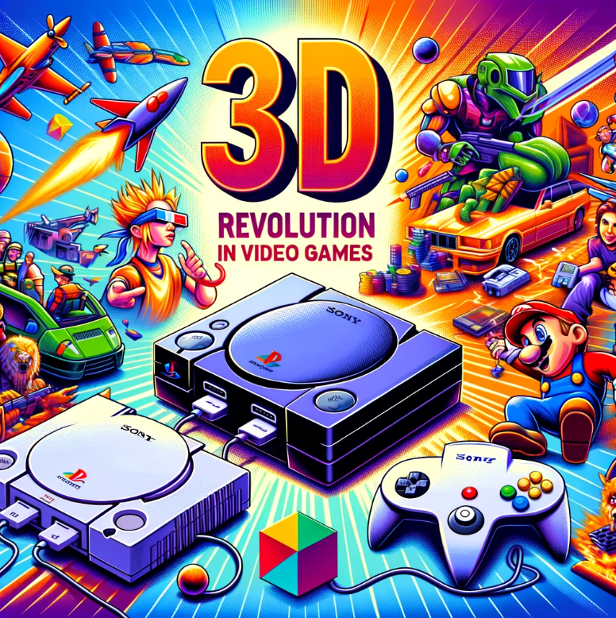

Historia Gier Wideo
Witamy na prezentacji dotyczącej historii gier wideo! Poznaj kluczowe momenty i tytuły, które ukształtowały tę fascynującą branżę.
Początki gier wideo
Pierwsze gry wideo pojawiły się w latach 70-tych XX wieku. Były to proste gry arkadowe, takie jak Pong i Space Invaders.
Era konsol domowych
Lata 80-te i 90-te to rozwój konsol domowych, takich jak Nintendo Entertainment System (NES) i Sega Genesis. Wprowadziły one gry do domów na całym świecie.

Rewolucja 3D
Lata 90-te przyniosły rewolucję 3D dzięki konsolom takim jak Sony PlayStation i Nintendo 64. Gry stały się bardziej realistyczne i złożone.

Współczesne gry
Dziś gry wideo są zaawansowane technologicznie, oferując wciągające doświadczenia dzięki grafice 4K, rzeczywistości wirtualnej i rozgrywce online.